Cigar Log: Phillies - Blunt Strawberry 4 (Top Half)
I finally tasted strawberry!!!
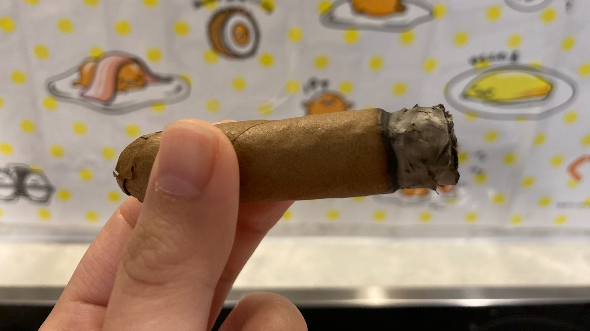 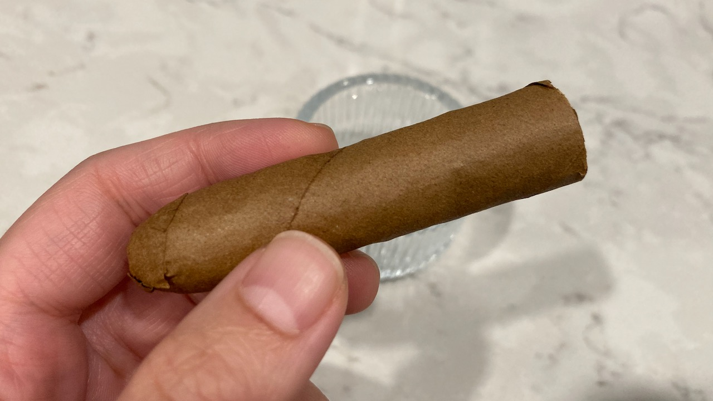
As mentioned from my post about the plan for this fourth Phillies cigar, it has an abnormal strong scent of artificial strawberry. Also noted that I chose to punch cut this half of the cigar to test out how I like it. I think the cut did contributed to my taste of the flavour.
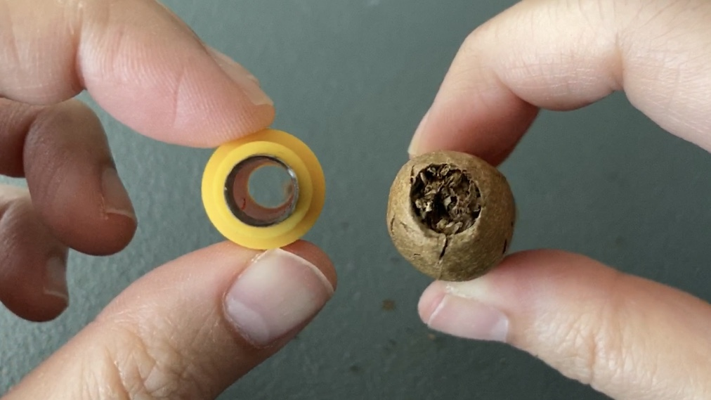
Most of the strawberry flavour that I tasted was on the wrapper. Because the opening for punch cut is much smaller, my lips are literally on the wrapper. 😆 It almost tasted like sugar when I did a cold draw. It was just so sweet, but artificial sweetness though. I was also taking tiny puffs at the start and was able to taste the some light sweetness from the smoke. 🍬
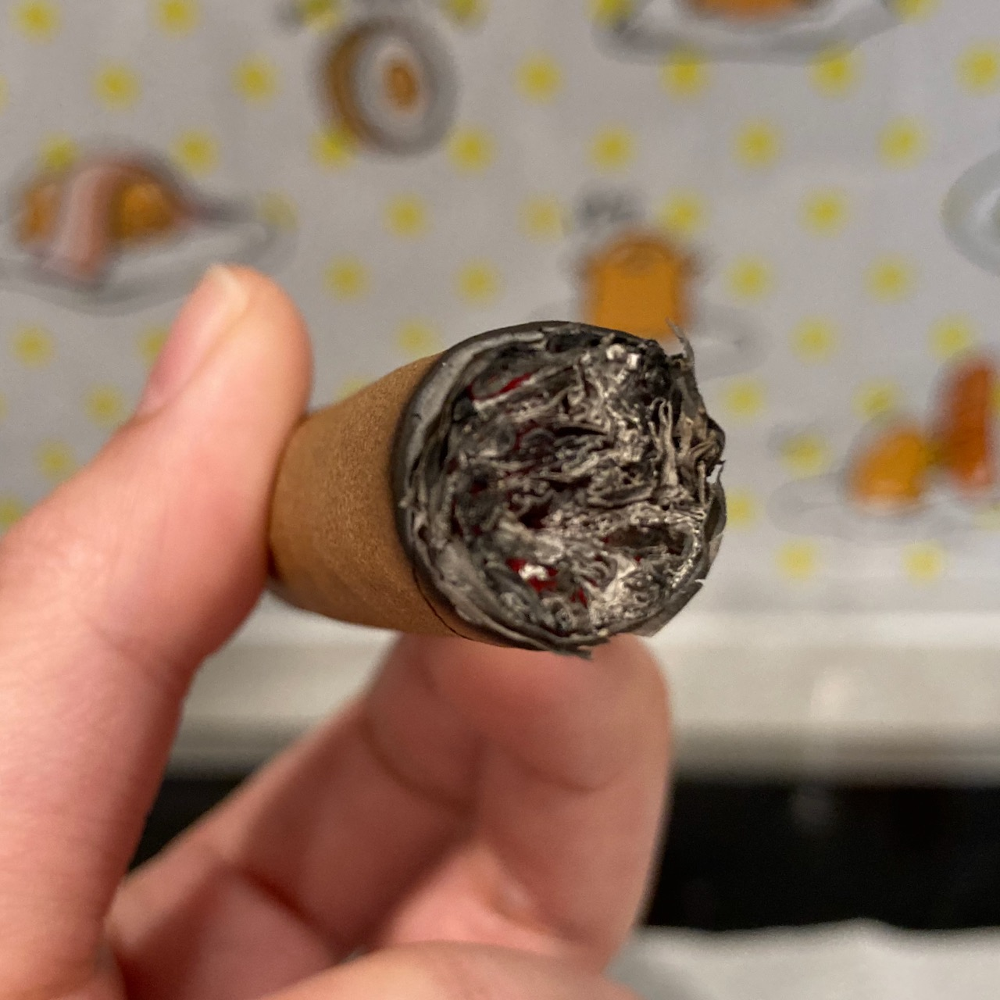 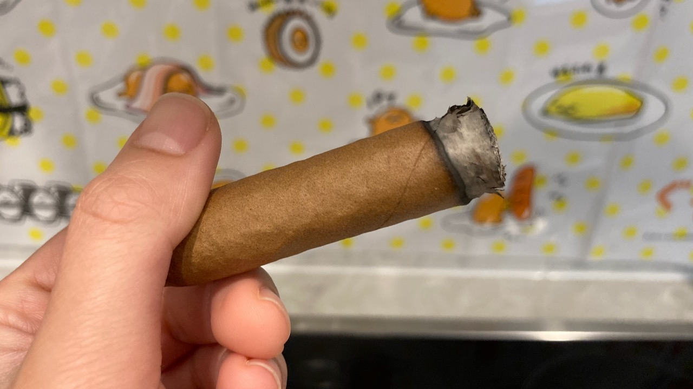
Still no strawberry taste from the puffs, but light sweetness from the smoke. I think that might just be the most strawberry that I can get from the smoke of this cigar. 🍓 The flavour are pretty much just gone after the first third and became regular tobacco smoke after.
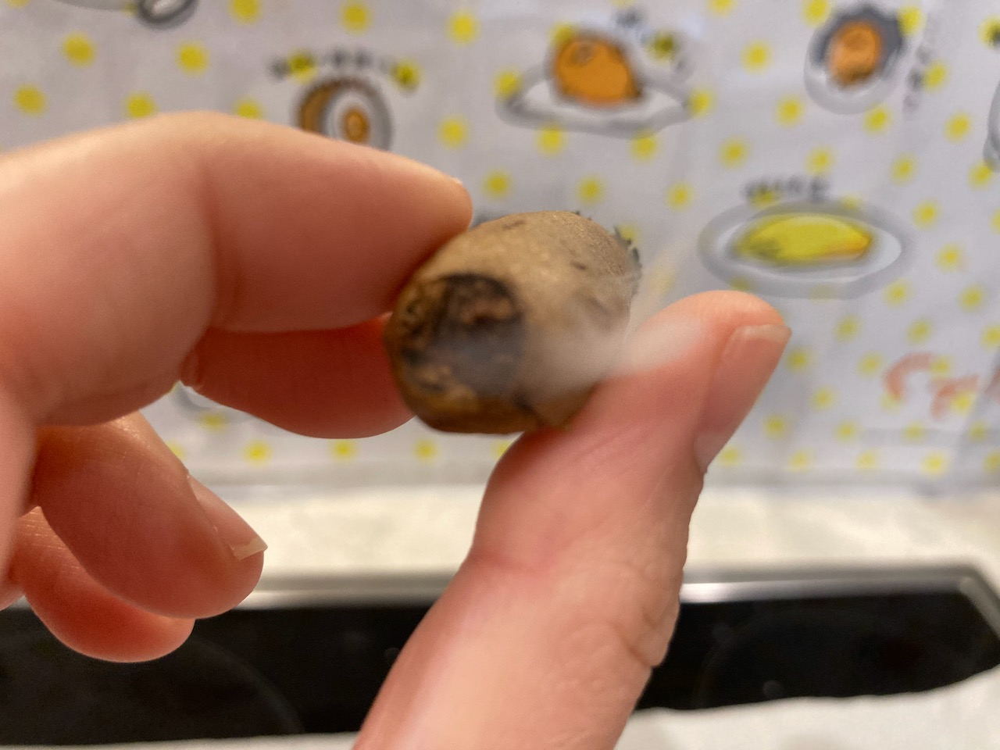 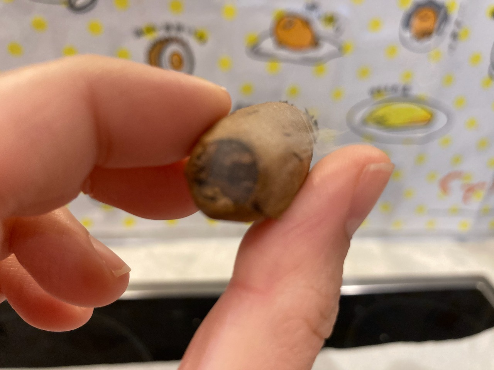 Quite a smoky cigar that is smoky from the head when I took a puff
Since it produces quite a bit of smoke, I thought to try retro-haling. I did manage to get some smoke out of my nose. However, most of it went down to my stomach. 😳 When I was trying to keep the smoke in my mouth, I accidentally swallowed it! It was so bitter. I don't think I like retro-haling at all. It also makes my throat area itchy. 😤
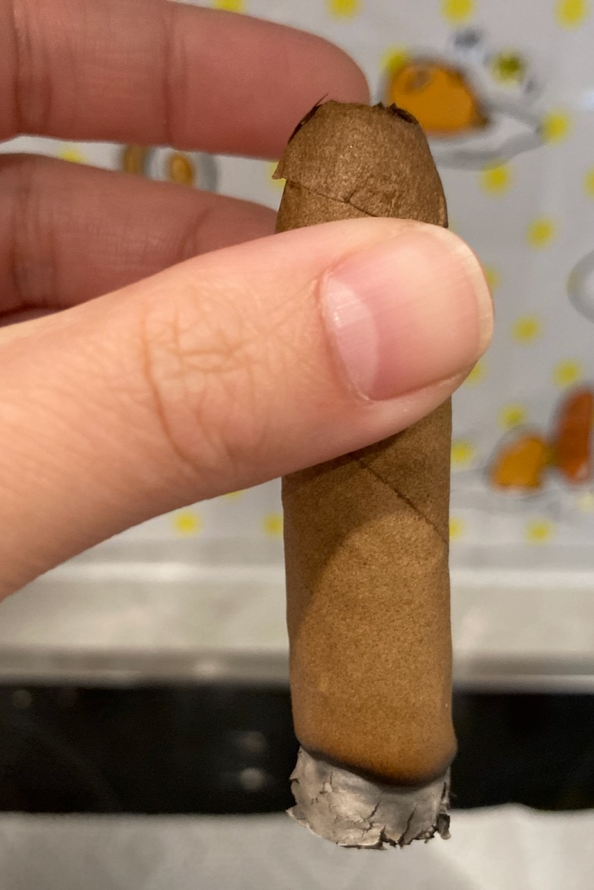 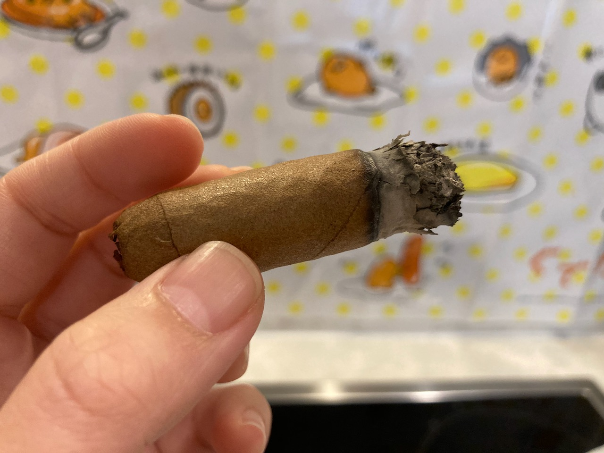
The smoke time for this one was a good 20 minutes. Note that I cut this cigar in half and this is the longer half. I smoked indoor for this one so there's no interference from the wind that speed up the burn. Since I got the air flow figured it out, I thought to give it a try and enjoy one. The past few cigars that I had were consumed outdoor and I couldn't enjoy it to the fullest because of the strong wind.
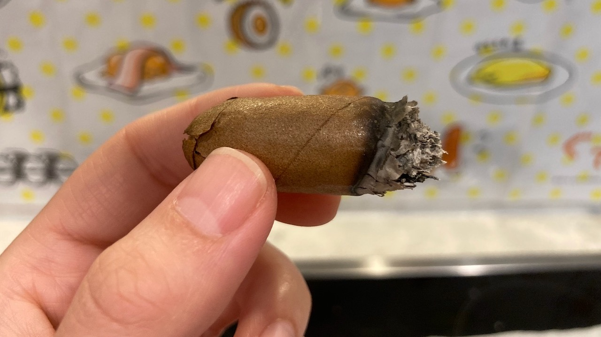 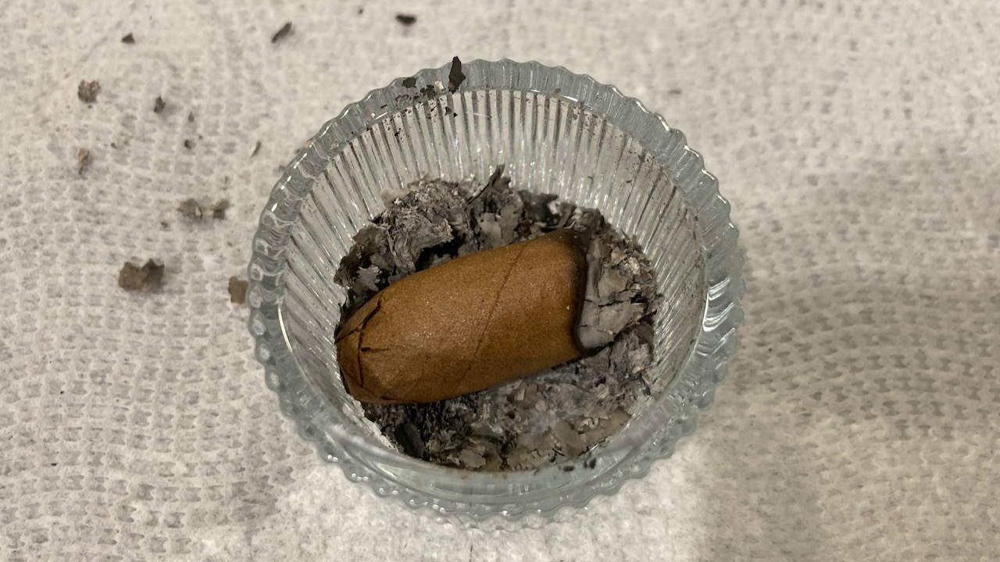
I put it down after the full body of the cigar feels too hot to hold in my fingers. That ended my cigar and you've reached the end of this post! Hope you enjoy reading. ❤ Please consider supporting this website if you enjoy it. Thank you and have a wonderful day!